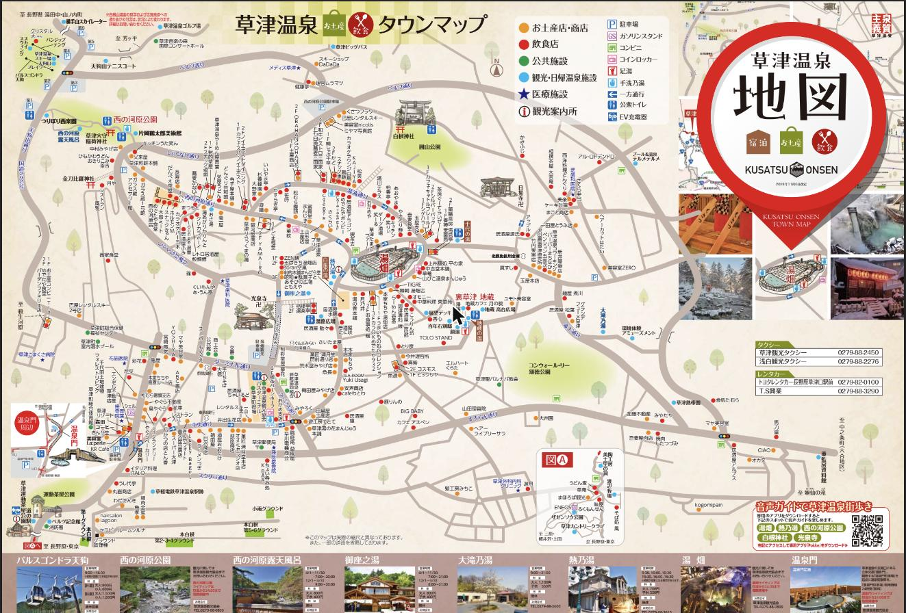

Trip Schedule ｜ 鬼怒川・草津・伊香保
北関東旅行
2026.11.21(土) - 11.23(月・祝)
📷 写真を共有する
-
10:00
-
14:30
-
16:30
チェックイン（Airbnb・貸切一軒家）
栃木県日光市 / 小佐越駅から徒歩2分
4寝室・最大17名の一軒家を貸切。線路沿いの屋根付きテラスでBBQができ、SL大樹などの電車が目の前を通ります。鬼怒川ライン下りまでは車で約7分です。
駐車場宿の前・敷地内は駐車禁止です。徒歩1分の「鬼怒川レジャー公園駐車場」に停めてください（隣家の敷地には立ち入らない）。チェックイン非対面（セルフ）です。事前にメッセージで案内される WEB名簿を全員分記入しないと、入室用の暗証番号が届きません。代表者の身分証の提出も必要です。ルール21:00〜翌7:00 はテラス使用不可。屋外で騒がない（声が近隣に響きます）。建物内は禁煙です。BBQ無料です。カセットボンベは持参し、後片付けは必ず行う（放置すると清掃費 3,300円/30分）。持っていく物食材・調味料（宿にあるのは食用油と塩コショウのみ）、カセットボンベ、虫よけ、歯ブラシ。音について線路と道路に挟まれた立地のため、電車や車の音が聞こえます。SL大樹の通過時刻・周辺の買い物
下り9:55頃 / 10:50頃 / 13:50頃 / 15:25頃（宿から特によく見えます）上り11:20頃 / 13:00頃 / 15:50頃 / 16:50頃宿の説明による目安です。日によって時刻が変わり、運休になることもあります。「SL大樹 時刻表」で当日の運行を確認してください。買い出し食材はリオンドール鬼怒川店、カセットボンベはコメリが宿のおすすめです。ファミレスは車1分、スーパーとコンビニは車5分です。


-
09:00
鬼怒川 出発
草津温泉方面へ移動
-
13:00
草津温泉 到着・ホテルヴィレッジ チェックイン
吾妻郡草津町草津618 / TEL: 0570-01-3232
到着後は先にホテルでチェックイン（入室できない場合は荷物を預けて散策へ）
📍 Googleマップで開く -
14:00
湯畑周辺 散策
吾妻郡草津町草津

写真: Mikkabie / CC BY-SA 4.0 / Wikimedia Commons（草津温泉の湯畑と街並み）
ホテルから歩いて湯畑周辺を散策
📍 Googleマップで開く

写真: NMaia / CC BY-SA 4.0 / Wikimedia Commons（伊香保温泉 石段街）
-
09:45
草津温泉 出発
-
10:15
-
12:45
昼食（万葉亭）＆ 伊香保石段街散策
水沢うどん 万葉亭：渋川市伊香保町水沢48-4
 人気メニュー天ざるうどん 1,910円（税込）コシの強い水沢うどんを冷たいざるで。海老と野菜の天ぷら付きで、お店のおすすめ御膳の筆頭です。公式お品書きを見る📍 Googleマップで開く
人気メニュー天ざるうどん 1,910円（税込）コシの強い水沢うどんを冷たいざるで。海老と野菜の天ぷら付きで、お店のおすすめ御膳の筆頭です。公式お品書きを見る📍 Googleマップで開く -
14:30
伊香保 出発
東京方面へ帰路

🗺️ 草津温泉 公式タウングイドマップ (PDF) を開く


簡易マップ（タップでPDF全3ページを開く）

写真: Σ64 / CC BY 4.0 / Wikimedia Commons（熱乃湯の湯もみショー）
熱乃湯（湯もみショー） 体験
伝統の「湯もみと踊り」を鑑賞。午後の部（15:30/16:00/16:30）あり（大人700円）。
📍 Googleマップで開く
持ち物チェックリスト
- 着替え・防寒具（草津は標高が高く冷え込みます）
- タオル・手ぬぐい（外湯・足湯巡り用）
- 充電器・モバイルバッテリー
- 常備薬・酔い止め（山道ドライブ対策）
- 小銭（コインロッカーや足湯利用時に便利）
- 濡れたタオルを入れる袋・サブバッグ
おすすめのお土産
鬼怒川温泉
・日光誉（日本酒） / 日光湯波
・鬼怒川温泉かりんとう饅頭
伊香保温泉
・水沢うどん（半生麺パックはお土産に最適）
・勝月堂の湯の花まんじゅう（温泉饅頭発祥の店）
写真共有
道中で撮った写真をアップロードすると、撮影場所が地図に並びます。合言葉を入力してください。
ドライブ詳細ルートマップ
ドラッグして高さを変更
地図: 読み込み中…。ルートは車での目安です（有料道路の利用可否・渋滞・休憩は反映していません）。番号ピンをタップすると詳細が開きます。